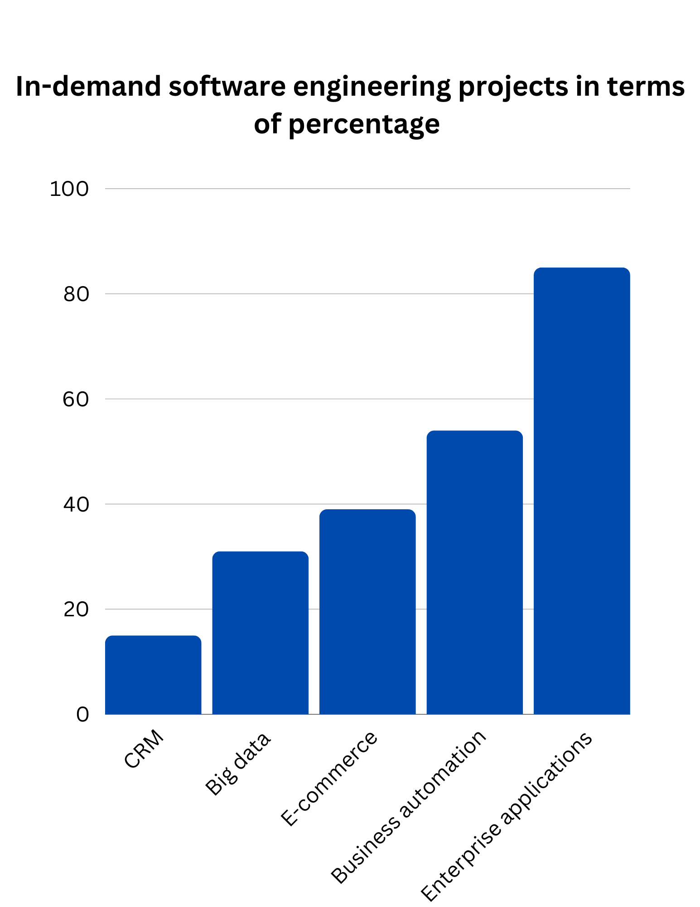

Experience
Besides education, experience is crucial for building a career in software engineering. It provides the application of problem-solving skills, hands-on skills, and an understanding of real-world scenarios.
Internships
As for any career field, internships are vital for learning about the field of software engineering. Employers want to hire individuals who have had prior experience. You may think graduating from university, coding boot camp, or self-teaching software engineering is in itself enough to land a job; however, that is not always the case for most people. An employer wants to make sure the person they are hiring is qualified for the job, hence why "x" amount of experience is needed to get the job.
Volunteer work
Volunteering can be a great way to gain experience in software engineering. Although it may not always involve working at a company, it will still show employers that you are dedicated to your career. A common form of volunteer work is mentoring an individual interested in the career field of software engineering. By doing so, you can show companies that you are qualified to teach others your skills regarding software engineering.
Projects
Projects are a great way to show employers how well you can code, test, and design systems. Whether you develop an E-commerce website, social media dashboard, chat application, or an AI chatbot, it will show employers that you are able to apply your skills in a practical manner. 